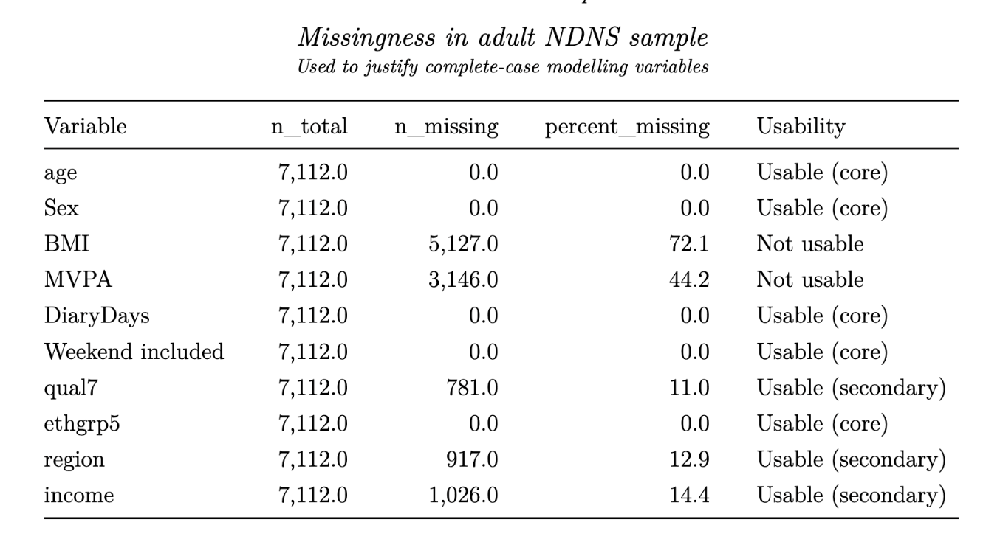
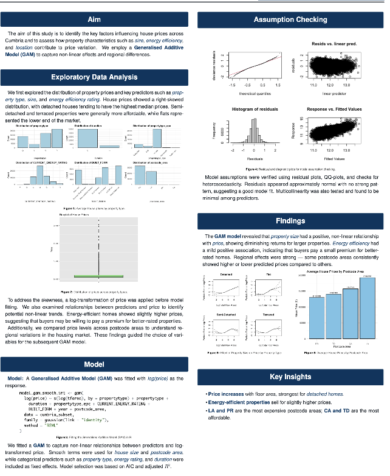
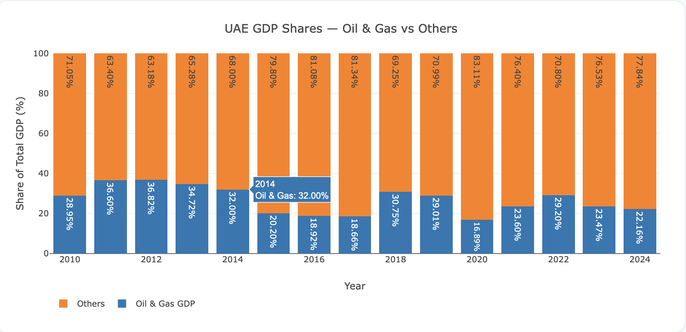

BSc (Hons) Statistics Graduate | Data & Financial Analyst
I bring a solid quantitative foundation with a BSc (Hons) Statistics from the University of Glasgow, featuring distinctions in Biostatistics, Advanced Data Analysis, and Engineering and Stochastic Processes, enhanced by an advanced modeling exchange at the University of Hong Kong. As a UAE resident with extensive international background, combining technical expertise in data pipelines, predictive analytics, and economic modeling with hands-on investment and financial analysis experience, I am driven to deliver impactful insights within the analyst sector.
* Click on any institution card below to view detailed academic highlights and coursework.
September 2018 - July 2021 | Head of Academics.
Bachelor of Science in Statistics with Honours
September 2021 - June 2026 | Courses with distinction: Biostatistics, Advanced Data Analysis, Engineering and Stochastic Processes.
Advanced Modeling Exchange Program
September 2024 - June 2025 | Advanced courses in Modelling, Sample Survey Methods, and Market Risk Analysis.

Built data pipelines to clean and structure large NDNS datasets, performing EDA and implementing a two-part Hurdle Model to deliver accurate predictive modelling.

Developed a predictive model for real estate trends by executing an end-to-end data cleaning and feature selection workflow to generate actionable market insights.

A comprehensive macro-level economic analysis tracking UAE's GDP diversification, trade openness, and social development indicators from historical data.
Core Technical Skills:
Languages: